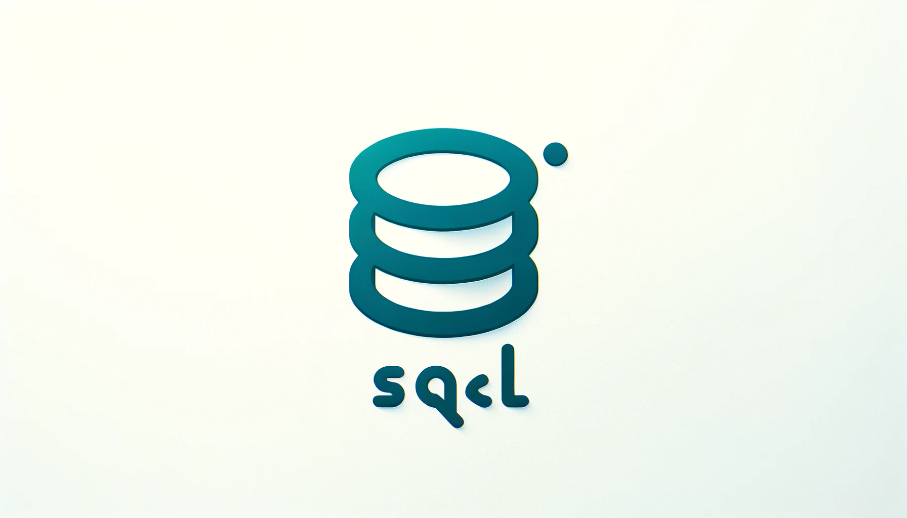
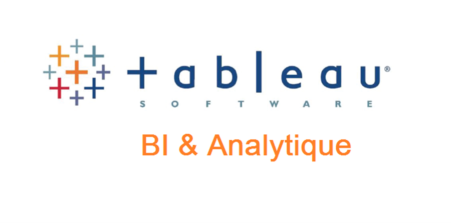
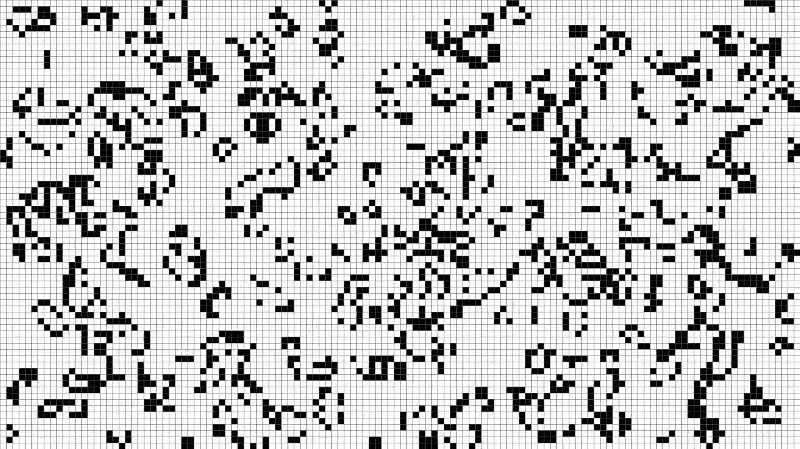

VisuLog is a robust tool designed for analyzing team member contributions within a shared project hosted on a Git repository. Its primary objective is to aid educators in the individual assessment of students collaborating in a team environment. VisuLog is developed using Java, with the integration of Git for version control and Scrum methodology to streamline project management and evaluation.
Welcome to our Board Game Collection project! This repository contains implementations of three unique board games, each offering a different style of play and strategy. Below is a brief overview of the games available in this collection.

The goal of this project is writting in C language a library of functions which implements different operations on integers with an arbitrary number of digits and an interpreter to execute them and display the results.

NoiseBook is an open-source social network project, designed to revolutionize the way users discover and experience music. This platform aims to connect music enthusiasts, allowing them to explore a multitude of new sounds across various genres, attend live concerts, and meet like-minded people in real settings.

A dashboard created on Tableau. it represents a market research for a client who wish to host his listings on Airbnb in Paris.It gives the client an idea of the demand per Neighborhood,Room types,competition overview...

This project is a practical implementation showcasing the use of TCP and UDP protocols in client-server interactions. It's designed for file uploads and downloads, offering a hands-on experience with network programming.

Conway's Game of Life is a cellular automaton that is played on a 2D square grid. Each square (or "cell") on the grid can be either alive or dead, and they evolve according to certain rules: Technology used: Java, OOP, JSwing, Git, Agile development.